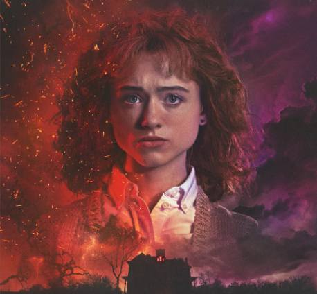
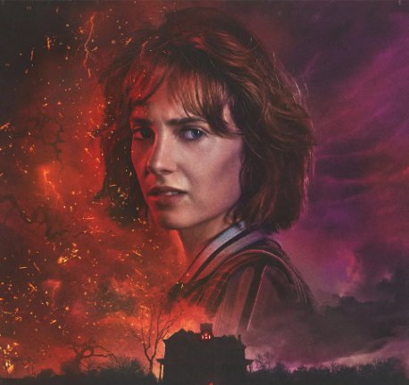

낸시 윌러
Nancy Wheeler배우 : 나탈리아 다이어
마이클의 누나. 고등학생으로 공부밖에 모르는 얌전한 모범생이지만 스티브에게 구애 받아 연애를 시작하며 양아치와도 어울리게 된다. 참고로 공부도 잘하지만 추리력이 뛰어난 편이며, 성격도 강단있고 추진력 있는 편. 작중에서 사건을 해결하는 모습도 자주 보여주고 의외로 사격에도 재능이 있는 모양인지 쏠때마다 백발백중이다.
조나단 바이어스
Jonathan Byers배우 : 찰리 히튼
조이스 바이어스의 아들이자 윌 바이어스의 형. 엄마와 동생 윌 바이어스, 그리고 본인 포함 세 가족이 함께 살고 있다. 참고로 아빠가 제대로 된 부모로서의 모습을 안 보여주고 항상 엄마와 싸우고 집에 안 좋은 일만 생기니 아빠를 굉장히 경계하고 예민하게 대한다. 성격은 내성적이고 사진 찍기를 좋아한다.
스티브 해링턴
Steve Harrington배우 : 조 키어리
낸시의 전 남자친구. 잘생긴 양아치로 이미 여러 여학생들과 잤고 이를 공공연하게 떠들고 다닌 적이 있는 듯. 낸시도 이 때문에 처음에는 스티브에게 반했으면서도 반쯤은 경계하는 모습을 보였다. 그래도 스티브의 계속 된 구애로 사귄다.
빌리 하그로브
Billy Hargrove배우 : 데이커 몽고메리
시즌 2에서 맥스와 함께 등장한 맥스의 의붓오빠로 탄탄한 몸매와 멋진 차를 몰고다니며 여학생들의 인기를 한 몸에 받는 존재이다. 학교의 짱이었던 스티브를 집요하게 노리며 작중 등장하는 인간 중 가장 사악한 악당이라 부를만한 존재이다. 항상 입에 담배를 물고 살며, 여동생이나 다른 인물들에게 함부로 대하거나 위협하는 날라리.

로빈 버클리
Robin Buckley배우 : 마야 호크
시즌 3에 처음으로 등장하며, 학교 짱 생활을 청산하고 아르바이트에 임하는 스티브의 직장 동료다. 여자 손님들을 꼬시려 하는 스티브를 놀리며 티격대는 게 주 특기. 중학생들과 어울리는 스티브를 비웃었으나, 더스틴 핸더슨이 하는 러시안 암호 얘기에 본인도 흥미를 느끼고 암호 해독에 참여했다가 상상 이상의 사건에 휘말리게 된다.